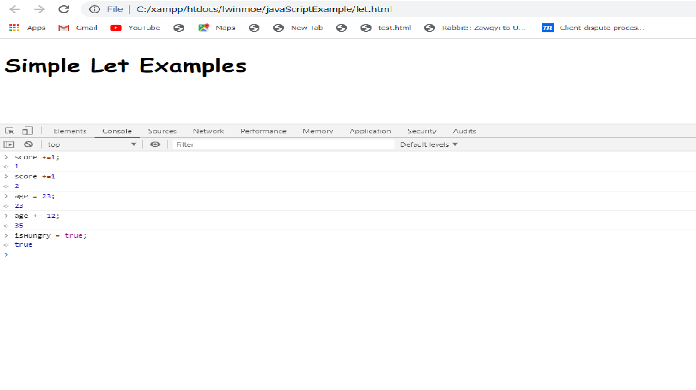

JavaScript life အတော်များများမှာဆိုရင် variable တစ်ခုကို create or declare လုပ်ဖို့ရန်အတွက် way တစ်ခုရှိပါတယ်။ အဲ့ဒါကတော့ var keyword ကိုအသုံးပြုတာပဲဖြစ်ပါတယ်။ JavaScript programmers အများစုကတော့ ဒီ method ကို learn လုပ်ကြပြီးတော့ အခုချိန်ထိ အသုံးပြုနေကြပါတယ်။ var ကို အသုံးပြုခြင်းရဲ့ behaviors အချို့ ကတော့ problematic or unexpected ဖြစ်နိုင်ပါတယ်။ အဲ့ဒါကြောင့် JavaScript programming language ရဲ့ developers တွေဟာ variables တွေကို creating လုပ်ဖို့အတွက် new ways ကို introduce လုပ်ဖို့ decide လုပ်ခဲ့ကြပါတယ်။ အခု JavaScript ရဲ့ sixth version or ES2015 or ECMAScript 2015 မှာ two new keywords ဖြစ်တဲ့ const and let တို့ကို introduced လုပ်ခဲ့ကြပါတယ်။ နောက် section တွေမှာဆိုရင် const and let တို့ဟာ ဘယ်လို အလုပ်လုပ်တယ်ဆိုတာကိုရှင်းပြပေးသွားမှာဖြစ်ပါတယ်။ နောက် သူတို့ကို variables တွေကို declare လုပ်တဲ့နေရာမှာ var keyword အစား ဘာကြောင့်အသုံးပြုသင့်တယ်ဆိုတာကိုလည်းပြောပြပေးသွားမှာဖြစ်ပါတယ်။ သူတို့ကို အသုံးပြုတဲ့နေရာမှာတော့ var ဆိုပြီးတော့ variable name တစ်ခုပြီးတော့ equal sign တစ်ခုနဲ့ declare လုပ်ရသလိုပဲ const and let တို့မှာလည်း အတူတူပဲဖြစ်ပါတယ်။
Const keyword ဟာဆိုရင် variable တစ်ခုကို creating လုပ်တဲ့နေရာမှာ အသုံးပြုသင့်တဲ့ first method ဖြစ်ပါတယ်။ တစ်ခါတစ်လေမှာတော့ သူဟာဆိုရင် declaring variables အတွက် best choice ဖြစ်ပါတယ်။ Constဆိုတာ constant ရဲ့ short ဖြစ်ပြီးတော့ variable ရဲ့ value ဟာ မပြောင်းလဲဘဲ constant အနေနဲ့ပဲ remain ဖြစ်နေတာဖြစ်ပါတယ်။ Constant တစ်ခုကို တစ်ကြိမ် create လုပ်ပြီးရင် ကျွန်တော်တို့ဟာ သူ့ထဲကို another value တစ်ခုကို ပေးလို့မရပါဘူး။ Constant ဟာဆိုရင် fix problems တွေကို ကူညီပေးပါတယ်။ နောက် သူဟာ ကျွန်တော်တို့ရဲ့ JavaScript programs ထဲမှာ လွယ်လွယ်ကူကူ crop up လုပ်နိုင်ပါတယ်။
အခုဆိုရင် ကျွန်တော်တို့ဟာ case of a number or a string ထဲမှာ const ကို reassign လုပ်လို့မရဘူးဆိုတာကို သိလေ့လာခဲ့ပြီးဖြစ်ပါတယ်။ နောက်ကျွန်တော်တို့ဟာ strings, numbers, booleans, objects and arrays တွေမှာ သူတို့ကို reassign ပြန်လုပ်လို့မရပါဘူး။ Arrays တွေထဲမှာရှိတဲ့ strings, numbers and booleans, objects တွေမှာဆိုရင် methods တွေနဲ့ objects or arrays တွေကို modify လုပ်ပေးတဲ့ properties တွေရှိပါတယ်။ ကျွန်တော်တို့ဟာ constant နဲ့ days ဆိုတဲ့ variable တစ်ခုကို declare လုပ်လိုက်မယ်။ သူ့ထဲမှာ single string တစ်ခုဖြစ်တဲ့ "Monday" ဆိုပြီးတော့ assign လုပ်လိုက်မယ်။ နောက် example မှာဆိုရင် person ဆိုတဲ့ constant variable တစ်ခုကို declare လုပ်လိုက်မယ်။ သူ့ထဲမှာဆိုရင် {first-name :"Imogen"} ဆိုတဲ့ object နဲ့ string တစ်ခုပါမယ်။ နောက် ကျွန်တော်တို့ဟာ console မှာ အဲ့ဒါတွေကို modify လုပ်ဖို့ရန်အတွက် attempt လုပ်ကြည့်လိုက်မယ်။ days.push() ဆိုပြီးတော့ days ထဲကို နောက်ထပ် string တစ်ခုကို assign လုပ်လိုက်တဲ့အခါမှာ သူဟာ days ထဲမှာရှိတဲ့ length number 2 ကို return ပြန်ပေးမှာဖြစ်ပါတယ်။ ကျွန်တော်တို့ဟာ days ကို type လုပ်လိုက်တဲ့အခါမှာတော့ array ထဲမှာရှိတဲ့ item တွေကို return ပြန်ပေးမှာဖြစ်ပါတယ်။ Const ဟာဆိုရင် modified လုပ်ထားတဲ့ arrays and objects တွေလိုမျိုး complex objects တွေကို prevent လုပ်မပေးနိုင်ပါဘူး။ သူဟာ objects and arrays တွေဟာ completely reassigned or over written ဖြစ်ပြီးမှာသာ prevent လုပ်ပေးမှာဖြစ်ပါတယ်။
Let keyword ကို ကျွန်တော်တို့ variable တစ်ခုကို reassign လုပ်ချင်တဲ့အခါမှာ အသုံးပြုနိုင်ပါတယ်။ သူဟာဆိုရင် var အလုပ်လုပ်ပုံနဲ့တူပါတယ်။ Example မှာဆိုရင် ကြည့်ကြည့်ပါ။ အဲ့မှာဆိုရင် ကျွန်တော်တို့ဟာ variables ၃ ခုကို let keyword နဲ့ declare လုပ်ထားတာဖြစ်ပါတယ်။ အဲ့ variables ၃ ခုထဲကို ကျွန်တော်တို့ဟာ value တွေကို reassign လုပ်နိုင်ပါတယ်။ var နဲ့ မတူတာကတော့ let keyword မှာ block level scoping ရှိပါတယ်။
<!DOCTYPE html>
<html lang="en">
<head>
<meta charset="UTF-8">
<meta name="viewport" content="width=device-width, initial-scale=1.0">
<meta http-equiv="X-UA-Compatible" content="ie=edge">
<title>Let Keyword</title>
</head>
<body>
<h1>Simple Let Examples</h1>
<script>
let score = 0;
let age = 33;
let isHungry = false;
</script>
</body>
</html>
Let keyword ဟာဆိုရင် for loops တွေအတွက် useful ဖြစ်ပါတယ်။ var ကိုအသုံးပြုတာဟာ for loop တစ်ခုထဲမှာ counter တွေကို define လုပ်ဖို့ရန်အတွက် ပဲဖြစ်ပါတယ်။ Example မှာလေ့လာနိုင်ပါတယ်။ ကျွန်တော်ဟာ example မှာဆိုရင် button တစ်ခုကို click လိုက်တာနဲ့ သူရဲ့ button no ကို ပါ alert box မှာ ပြရမှာဖြစ်ပါတယ်။ အဲ့ဒါအတွက် const ကို အသုံးပြုရင်တော့ အဆင်မပြေနိုင်ပါဘူး။ အဲ့ဒါကြောင့် let ကိုအသုံးပြုနိုင်ပါတယ်။
<!DOCTYPE html>
<html lang="en">
<head>
<meta charset="UTF-8">
<meta name="viewport" content="width=device-width, initial-scale=1.0">
<meta http-equiv="X-UA-Compatible" content="ie=edge">
<title>button - let and Const</title>
</head>
<body>
<h1>Buttons</h1>
<button>Buttton 0</button>
<button>Buttton 1</button>
<button>Buttton 2</button>
<button>Buttton 3</button>
<button>Buttton 4</button>
<button>Buttton 5</button>
<button>Buttton 6</button>
<button>Buttton 7</button>
<button>Buttton 8</button>
<button>Buttton 9</button>
<button>Buttton 10</button>
<script>
const buttons = document.getElementsByTagName('button');
for ( let i=0; i<= buttons.length; i++){
let button = buttons[i];
button.addEventListener('click', function (){
alert("Button" + i + "pressed")
}
);
}
</script>
</body>
</html>
Test Yourselfအကျဉ်းချုပ်အနေနဲ့ constant ဟာဆိုရင် declaring variables ဟာ first option ဖြစ်ပါတယ်။ သူတို့ဟာဆိုရင် reassignment bugs တွေကို prevent လုပ်ဖို့ရန်အတွက် အသုံးပြုနိုင်ပြီးတော့ code တွေကို debug လုပ်တဲ့အခါမှာလည်း faster ဖြစ်အောင် ကူညီပေးပါတယ်။ Const variable မှာဆိုရင် block level scoping ရှိပါတယ်။ Code ရဲ့ block တစ်ခုဟာ curly braces ကြားမှာရှိတဲ့ရာတွေပဖြစ်ပါတယ်။ Let keyword ဟာဆိုရင် ကျွန်တော်တို့ value တစ်ခုကို reassign လုပ်ချင်းတဲ့အခါမှာ var အတွက် great substitute တစ်ခုဖြစ်ပါတယ်။
အခု section မှာတော့ JavaScript Booleans အကြောင်းကို လေ့လာသွားမှာဖြစ်ပါတယ်။ Boolean logic ဆိုတာ every programming language ရဲ့ important part တစ်ခုပဲဖြစ်ပါတယ်။ Languages တွေမှာ Boolean တစ်ခုဟာ two values, either true or false တွေနဲ့ ရှိနိုင်ပါတယ်။ Generally အရတော့ သူတို့ဟာ truthy or falsey ကို consider လုပ်တဲ့ types, keywords, and global variables တွေဖြစ်ပါတယ်။ လက်တွေ့မှာတော့ Booleans တွေကို application မှာ different states တွေကို create လုပ်ဖို့ရန်အတွက် အသုံးပြုနိုင်ပါတယ်။ ကျွန်တော်တို့ဟာ variable ကို value တစ်ခုမပါဘဲနဲ့ setting လုပ်ထားတယ်ဆိုရင် အဲ့ဒါဟာ undefined ဖြစ်ပါတယ်။ Undefined ဟာ falsy ပဲဖြစ်ပါတယ်။ သူဟာဆိုရင် false အနေနဲ့ပဲ serve လုပ်ပါတယ်။ Example မှာကြည့်နိုင်ပါတယ်။
<!DOCTYPE html>
<html lang="en">
<head>
<meta charset="UTF-8">
<meta name="viewport" content="width=device-width, initial-scale=1.0">
<meta http-equiv="X-UA-Compatible" content="ie=edge">
<title>Boolean Undefined</title>
</head>
<body>
<script>
var teams = {
soccer: "Portland Timbers",
hockey: "San Jose Shark"
}
</script>
</body>
</html>
အခုနောက်ထပ် truthiness and falseness ကို သွားကြည့်ရအောင်။ အဲ့နောက်ထပ်တစ်ခုမှတ်ထားရမှာက JavaScript ကို loosely typed language တစ်ခုလို့လည်းခေါ်ပါတယ်။ First အနေနဲ့ truthy ဆိုတာဘာလဲဆိုတော့ truthy ဖြစ်တဲ့ any string တွေပဲဖြစ်ပါတယ်။ False နဲ့ 0 ကို quotes ထဲမှာထည့်ရေးတာလဲ truthy ဖြစ်ပါတယ်။ နောက် object or arrat တွေဟာ သူတို့ထဲမှာ empty ဖြစ်နေရင် လည်း truthy ဖြစ်ပါတယ်။ နောက်ဆုံးအနေနဲ့ 2.0 or 3.3 တို့လို့float တွေဟာလည်း truthy ဖြစ်ပါတယ်။ နောက် any integer တွေဟာလည်း truthy တွေပဲဖြစ်ပါတယ်။ ကျွန်တော်ပြောပြခဲ့တာတွေကို example မှာလေ့လာနိုင်ပါတယ်။
အခုတစ်ခါမှာတော့ falseness ကိုသွားကြည့်ရအောင့်။ False ဆိုတာ JavaScript Boolean ရဲ့ type တစ်ခုပဲဖြစ်ပါတယ်။ သူ့ထဲမှာဘာတွေပါလဲဆိုတာသွားရအောင်။ 0 ဆိုတဲ့ number တစ်ခုဟာ integer တစ်ခု or floating value တစ်ခုဆိုရင် သူဟာ falsey ဖြစ်ပါတယ်။ နောက်ထပ် သူ့မှာ null, undefined, NaN, and empty string တွေဟာလည်း falsey တွေဖြစ်နိုင်ပါတယ်။ Example မှာလေ့လာနိုင်ပါတယ်။